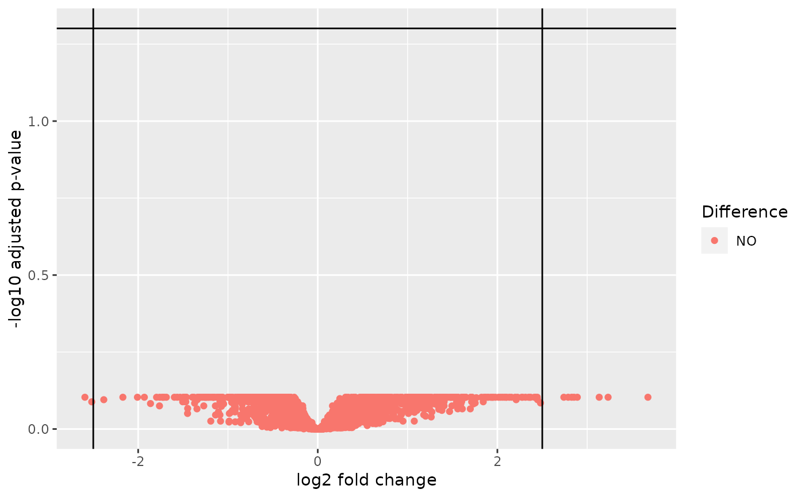

![[Experimental]](figures/lifecycle-experimental.svg)
The diff_expression() function performs differential expression analysis
using a method of preference.
A corresponding autoplot() method is visualizing the results as a volcano plot.
diff_expression(object, group, method = c("voom", "deseq2"), ...) # S4 method for HermesDataDiffExpr autoplot(object, adj_p_val_thresh = 0.05, log2_fc_thresh = 2.5)
Arguments
| object | ( |
|---|---|
| group | ( |
| method | ( |
| ... | additional arguments passed to the helper function associated with the selected method. |
| adj_p_val_thresh | ( |
| log2_fc_thresh | ( |
Value
A HermesDataDiffExpr object which is a data frame with the following columns for each gene
in the HermesData object:
log2_fc(the estimate of the log2 fold change between the 2 levels of the provided factor)stat(the test statistic, which one depends on the method used)p_val(the raw p-value)adj_p_val(the multiplicity adjusted p-value value)
Details
Possible method choices are:
voom: useslimma::voom(), seeh_diff_expr_voom()for details.deseq2: usesDESeq2::DESeq(), seeh_diff_expr_deseq2()for details.
Functions
autoplot,HermesDataDiffExpr-method: generates a volcano plot for aHermesDataDiffExprobject.
Note
We provide the
df_cols_to_factor()utility function that makes it easy to convert thecolData()character and logical variables to factors, so that they can be subsequently used asgroupinputs. See the example.In order to avoid a warning when using
deseq2, it can be necessary to specifyfitType = "local"as additional argument. This could e.g. be the case when only few samples are present in which case the default parametric dispersions estimation will not work.
Examples
object <- hermes_data %>% add_quality_flags() %>% filter() # Convert character and logical to factor variables in `colData`, # including the below used `group` variable. colData(object) <- df_cols_to_factor(colData(object)) res1 <- diff_expression(object, group = "SEX", method = "voom") head(res1)#> log2_fc stat p_val adj_p_val #> GeneID:8284 10.806719 30.32528 3.423258e-18 8.185009e-15 #> GeneID:8653 11.348382 23.48803 4.949871e-16 5.917571e-13 #> GeneID:9086 9.743027 20.11158 9.768002e-15 6.365053e-12 #> GeneID:246126 10.798669 19.81008 1.303130e-14 6.365053e-12 #> GeneID:7404 11.067256 19.68639 1.468386e-14 6.365053e-12 #> GeneID:8287 11.599664 19.59967 1.597253e-14 6.365053e-12#> log2_fc stat p_val adj_p_val #> GeneID:8284 10.970130 22.88851 6.046865e-116 1.418595e-112 #> GeneID:8653 11.582723 19.63453 7.839942e-86 9.196252e-83 #> GeneID:8287 11.045649 19.60398 1.429972e-85 1.118238e-82 #> GeneID:7404 10.468401 19.16270 7.584164e-82 4.448112e-79 #> GeneID:7544 9.531687 16.90756 3.957860e-64 1.857028e-61 #> GeneID:6192 10.323359 14.50244 1.169159e-47 4.571410e-45# Pass method arguments to the internally used helper functions. res3 <- diff_expression(object, group = "SEX", method = "voom", robust = TRUE, trend = TRUE) head(res3)#> log2_fc stat p_val adj_p_val #> GeneID:8284 10.806719 30.34872 3.415649e-18 8.166818e-15 #> GeneID:8653 11.348382 23.41794 6.866368e-16 8.208744e-13 #> GeneID:9086 9.743027 20.05696 1.027730e-14 8.191005e-12 #> GeneID:246126 10.798669 19.77146 1.428302e-14 8.537675e-12 #> GeneID:7404 11.067256 19.61206 1.992982e-14 8.770408e-12 #> GeneID:8287 11.599664 19.50908 2.200855e-14 8.770408e-12#> log2_fc stat p_val adj_p_val #> GeneID:8284 10.970540 23.27571 7.813889e-120 1.833138e-116 #> GeneID:8287 11.046108 20.18723 1.267710e-90 1.487024e-87 #> GeneID:8653 11.583142 20.03429 2.767702e-89 2.164343e-86 #> GeneID:7404 10.469131 19.80223 2.848032e-87 1.670371e-84 #> GeneID:7544 9.532262 17.41606 6.232116e-68 2.924109e-65 #> GeneID:6192 10.323522 14.91175 2.764169e-50 1.080790e-47# Create the corresponding volcano plots. autoplot(res1)autoplot(res3)